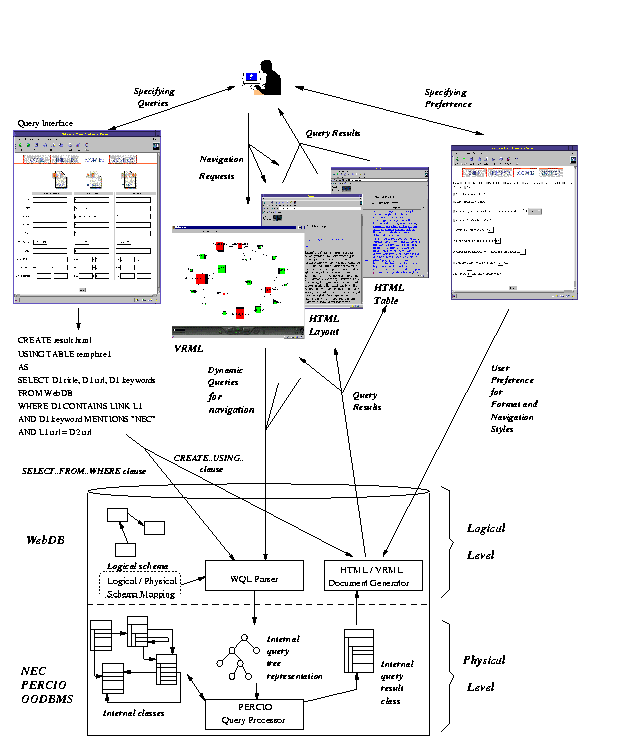
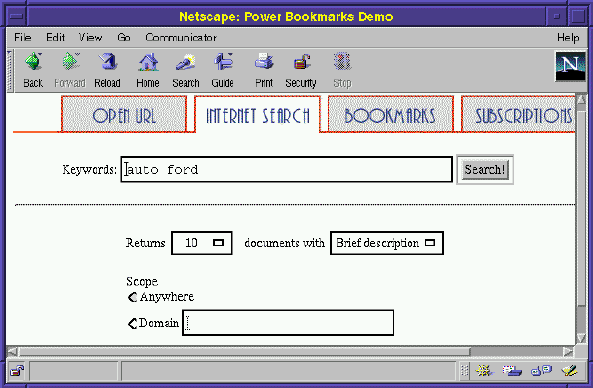
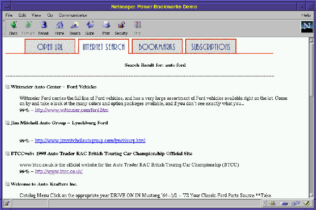
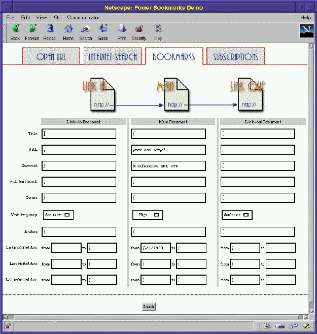
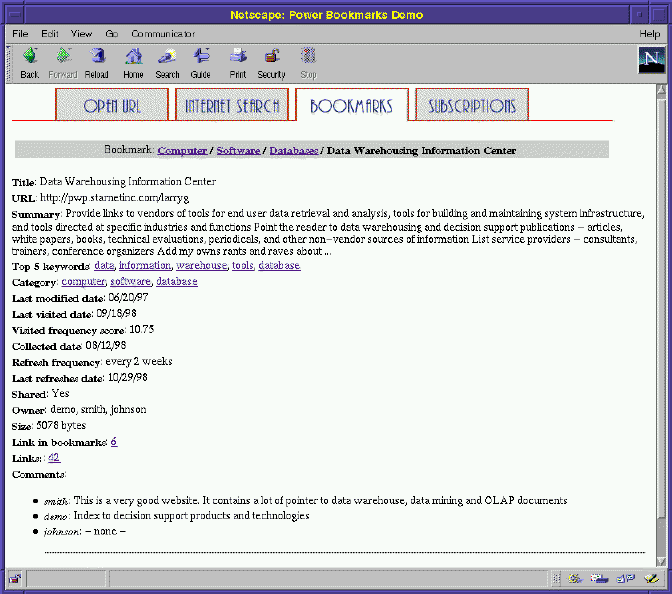
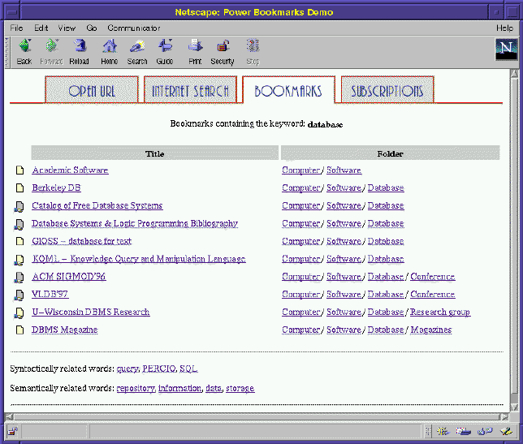
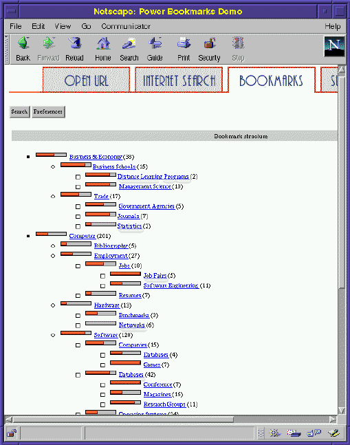
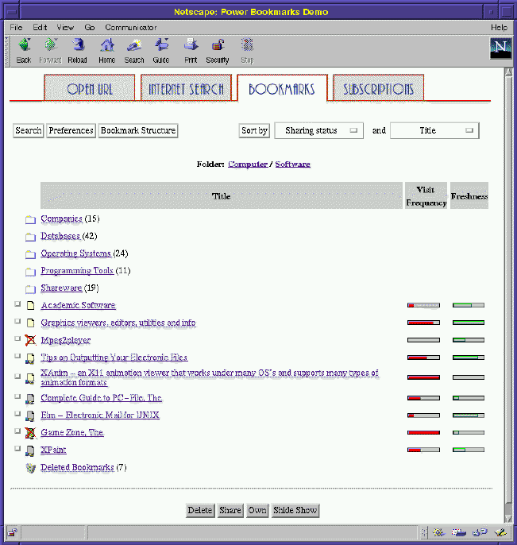
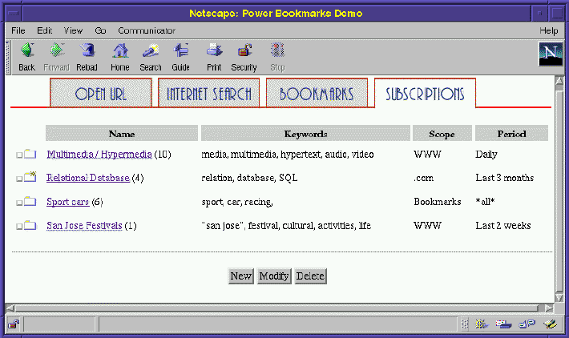
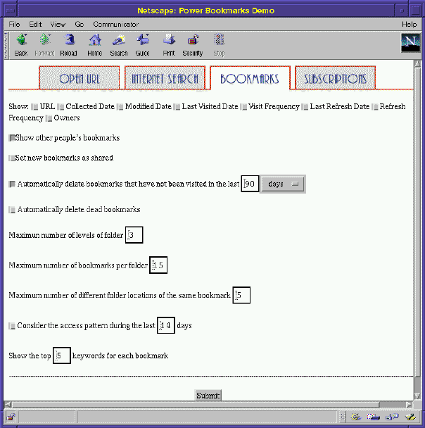

PowerBookmarks: A System for Personalizable Web Information
Organization, Sharing, and Management
Wen-Syan Li, Quoc Vu, Edward Chang, Divyakant Agrawal, Kyoji
Hirata
Sougata Mukherjea Yi-Leh Wu, Corey Bufi, Kevin Chang, Yoshinori
Hara
C&C Research Laboratories, NEC USA, Inc.
110 Rio Robles, M/S SJ100, San Jose, CA 95134, USA
Phone: (408)943-3008 Fax: (408)943-3099)
Reiko Ito, Yutaka Kimura, Kazuyuki Shimazu, Yukiyoshi Saito
5th Development Department, 2nd Computers Software Division, NEC
Corporation
1-10, Nisshin-Cho, Fuchu-Shi, Tokyo 183-8501, JAPAN
1. Introduction
Users of the Web are overloaded with information. This medium is ``polluted"
with redundant, erroneous and low quality information. It has no aggregate
structure which organizes distinct Web localities. Users have no global
view of the entire Web from which to forage for relevant pages. As a matter
of fact, a WWW survey of 11,700 users conducted from April 10 to May 10,
1996[1] indicates that 30.31% of the users
report "finding known info" is a problem and 27.80% and 12.16% of the users
report organizing collected information and finding pages already visited
as their significant problems respectively.
Figure 1: WebDB Functionality Overview
 |
Another study[2] on user behavior of
using bookmarks indicates that users gradually build a small sized archive
where 68% of users have 11 to 100 bookmarks Over 93% of users create 0
to 5 bookmarks in each browsing session. It also found that a larger archive
requires more sophisticated means of organizing. However, existing Internet
browsers only provide a flat layout format for bookmarks, which
has low usability and poor scalability. An empirical study[3]
on users' revisitation patterns to WWW pages found that 58% of an individual's
pages are revisits. With these study results, we believe the Web users
would like to build and organize a larger collection of bookmarks for future
references than they can reasonably maintain now.
PowerBookmarks is being developed under the auspices of the WebDB
project[4,5]
to address the issues above. Unlike existing bookmarking schemes, where
bookmarks cannot be shared, PowerBookmarks supports information
sharing with access control.
PowerBookmarks also support automated
bookmark classification based on document contents as well as many
useful personalizable services, such as automated dead link and inactive
link removal and new or modified document subscription services. We start
with the overview of WebDB, followed by the functionalities of PowerBookmarks
with demonstrative window dumps.
2. WebDB Hypermedia Database
System
The Web is a collection of multimedia documents in the form of HTML pages
connected through hyperlinks. Unlike most search engines, which focus on
information retrieval based on keywords, WebDB aims at supporting database-like
comprehensive query functionalities as well as navigation, and document
generation functionalities with customizability. It is designed to support
enterprise level document management, Web site page information maintenance,
and to support hypermedia database functionalities, we augment the traditional
concepts of tables in relational databases and classes in object-oriented
databases with notions of document formats and navigation. We design WQL
(Web Query Language)[5] as an HTML document
manipulation language. WQL language statements contain two parts:
SELECT...FROM...WHERE
clauses for specifying retrieval of data contents from hypermedia databases
and CREATE...AS... clauses for specifying the output HTML format
and navigation of the query results.
The WebDB hypermedia database system provides storage, object-oriented
document modeling, SQL3 like document language query processing, and HTML/VRML
document generation for PowerBookmarks. The architecture of WebDB has two
levels: a logical level consisting modules for logical Web modeling, the
WQL query language, and HTML/VRML document generator; and a physical level
consisting modules for internal class representations, query processing,
and the query result class generator. Figure 1
gives an overview of WebDB architecture and its design is highlighted as
follows:
-
HTML documents are logically modeled as object-oriented hierarchical
structures while being physically modeled and stored in the underlying
NEC PERCIO OODBMS as classes. A logical/physical schema mapping is maintained
for query translation.
Figure 2: Internet Query Window
 |
Figure 3: Internet Query Results
 |
-
WQL is used for querying WebDB. A visual query interface is supported to
assist users in specifying queries while actual WQL queries are generated
automatically by the WQL query generator. Hence, the complexity of the
underlying schema and the query language remains transparent to the user.
Figure 4: Query Interface
 |
Figure 5: Browsing Detail Document Metadata
 |
Figure 6: Navigation through keyword anchor Database
 |
-
The SELECT..FROM..WHERE clauses in WQL are then translated into
their corresponding internal query tree representations for processing
against the object-oriented class schema. The translation is performed
by the WQL parser by consulting the logical/physical schema mapping.
-
After query processing, the query results returned by the NEC PERCIO OODBMS
are in the internal object-oriented class format. The HTML/VRML document
generator of WebDB then converts the query results in internal representations
to their corresponding HTML/VRML forms.
-
Various forms of query result representations, such as HTML tables and
VRML visualization, are supported. Anchors in the HTML result documents
are implemented as queries to WebDB. Similarly, each node in the VRML visualization
page is implemented as an anchor with embedded queries to WebDB to generate
new VRML pages as navigation destinations.
Figure 7: Bookmark Structure
 |
Figure 8: Navigation through Classification Hierarchy (Root
Computer
Software)
 |
Figure 9: Subscription Folder Browsing window
 |
Figure 10: User Preference Setup Window
 |
3. PowerBookmarks Functionalities
In this section, we summarize some major functionalities of
PowerBookmarks
as follows:
Querying:PowerBookmarks supports a simplified query interface,
shown in Figure 2, for users to query
the Internet. After the results are returned by Internet search engines,
a filter program extracts useful information and present it to the user.
Figure 3 shows the query results
for keywords auto and Ford. The user can select a set of
URLs to browse in a slide-show fashion or save them as bookmarks in PowerBookmarks.
When the user requests to collect URLs into PowerBookmarks,
PowerBookmarks
performs a sequence of tasks as follows: (1) downloading the URLs; (2)
extracting keywords, summary, links, and related URL metadata, such as
last modified date, etc.; (3) indexing the URLs, including indexing in
a full text search engine TOPIC[6], cooccurring
word analysis, and storing metadata in WebDB. After the documents are indexed
in PowerBookmarks (through WebDB), the user can issue more complex
queries to retrieve bookmark URLs. Figure 4
shows the query interface used in PowerBookmarks. In this window,
the user issues a query retrieving the bookmarks related to call for papers
for conferences related to XML. Queries with more complex criteria,
such as links, full text search, relaxed keyword search[4],
are also supported. The query functionalities in PowerBookmarks
is carried out by the underlying WebDB.
Browsing and Navigation: The user can also click on a bookmark
to view the HTML document or its detail descriptive meta information. Figure
5 shows a window dump for a bookmark
URL. Note that at the bottom of this window, there are three comments by
the owners who have this URL as a shared bookmark. This functionality allows
collaborative work and social filtering in a workplace. In addition to
browsing, the user can also navigate through the hypermedia database system
of bookmarked HTML documents. In Figure 5,
the detail information for a bookmark includes a summary and its most significant
keywords. The user can click on the keyword anchor to navigate to other
bookmark pages with such a keyword. Figure 6
shows the navigation result when the user clicking the database
keyword anchor in Figure 5.
Classification of Bookmarks:PowerBookmarks supports automated
document classification by contents based external classifiers similar
to Pharos[7]. Figure 7
shows a classification tree for bookmark URLs in PowerBookmarks.
Note that this window also displays the number of bookmarks in each folder
and the access frequency of each folder (i.e. category) indicated with
a temperature icon. The user may navigate through the path to locate URLs
of his/her interests. Figure 8 shows
a window dump for display of documents and folders at the node Computer/Software.
At this node, there are the user's own bookmarks (shared and non-shared)
and shared bookmarks owned by other users. The bookmarks with a red cross
are dead links detected by the system. The system can also automatically,
if the user prefers, move the dead links and inactive bookmarks to the
Deleted folder at the bottom of the window. The user can click on
any folder to go to other nodes in the bookmark structure.
Subscription Service:PowerBookmarks supports subscription
services for new or modified documents on the Internet and intranet as
described in [8]. The user can set the
subscription criteria, such as temporal, domains, keyword similarity, or
document similarity, etc. When there are incoming bookmarks available,
the user will be notified (i.e. indicated with a spark) as shown in Figure
9
Preference Setup Window: One unique feature of PowerBookmarks
is personalizability.
Figure 10 shows
that the user sets up his preference, such as automated removal of dead
links and inactive bookmarks as well as the depth and the fanout of bookmark
classification tree for navigation. The parameter of the period for considering
user access pattern is used to adjust the ranking formula for bookmarks
in the classification structure and user profile analysis for subscription.
4. Conclusion
This demonstration proposal has highlighted many features of an advanced
and personalizable Web information management system. It shows a real and
useful application of integrating database and Web technologies. The system
demonstration will serve as a forum for stimulating discussion and productive
interaction among researchers and users in the area of Web-based information
and database system attending 1999 ACM SIGMOD/PODS Conference.
Bibliography
-
1
-
Georgia Tech Research Corporation.
GVU's 7th WWW User Survey.
Information available at http://www.gvu.gatech.edu/user_surveys/survey-1997-04/,
1997.
-
2
-
David Abrams and Ron Baecker.
How People Use WWW Bookmarks.
ACM CHI 1997 Electronic Publications (Late-Breaking/Short Talks).
Information available at http://www.acm.org/sigs/sigchi/chi97/
proceedings/short-talk/da.htm, 1997.
-
3
-
Linda Tauscher and Saul Greenberg.
Revisitation Patterns in World Wide Web Navigation.
In Proceedings of the 1997 ACM CHI Conference, Atlanta, GA,
March 1997.
-
4
-
Wen-Syan Li and Junho Shim.
Facilitating Complex Web Queries through Visual Interfaces and Query
Relaxation.
In Proc. of the 7th World-Wide Web Conference, Brisbane, Queensland,
Australia, April 1998.
-
5
-
Wen-Syan Li, Yi-Leh Wu, Junho Shim, Kyoji Hirata, Sougata Mukherjea, Divyakant
Agrawal, Yoshinori Hara, Reiko Ito, Yutaka Kimura, Kazuyuki Shimazu, and
Yukiyoshi Saito.
WebDB Hypermedia Database System.
IEICE Transactions on Information Systems, 82(1), January 1999.
-
6
-
NEC Corporation.
JTOPIC Developer's Kit.
NEC Corporation, December 1997.
-
7
-
R. Dolin, D. Agrawal, A. El Abbadi, and J. Pearlman.
Using Automated Classification for Summarizating and Selecting Heterogeneous
Information Sources.
D-Lib, Information available at http://www.dlib.org/dlib/january98/dolin/01dolin.html,
January 1998.
-
8
-
Wen-Syan Li, Yi-Leh Wu, Corey Bufi, Chen-Chuan Kevin Chang, Divyakant Agrawal,
and Yoshinori Hara.
PowerBookmarks: An Advanced Web Bookmark Database System and its Information
Sharing and Management.
In Proceedings of 5th International Conference of Foundations of
Data Organization (FODO'98), Kobe, Japan, November 1998.
About this document ...
PowerBookmarks: A System for Personalizable Web
Information Organization, Sharing, and Management
This document was generated using the
LaTeX2HTML
translator Version 98.2 beta3 (July 4th, 1998)
Copyright © 1993, 1994, 1995, 1996,
Nikos
Drakos, Computer Based Learning Unit, University of Leeds.
Copyright © 1997, 1998,
Ross
Moore, Mathematics Department, Macquarie University, Sydney.
The command line arguments were:
latex2html -split 1 paper
The translation was initiated by Wen-Syan Li on 1999-11-30
Wen-Syan Li
1999-11-30